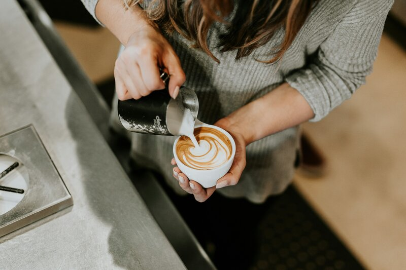

El mejor cafe de la Ciudad

El barista es un profesional especializado en la preparación de café, cuya labor va mucho más allá de servir una bebida caliente. Domina técnicas de extracción, conoce los distintos métodos de preparación —como espresso, prensa francesa o Chemex— y cuida cada detalle en sabor, aroma y presentación. Además, aplica arte latte, recomienda granos según su origen y tueste, y mantiene el equipo en óptimas condiciones. Su trabajo combina precisión técnica con sensibilidad estética, convirtiendo el café en una experiencia sensorial.
Con el auge del café de especialidad, el barismo se ha convertido en una profesión valorada por su creatividad, técnica y conocimiento profundo del producto. El término “barista”, de origen italiano, ha evolucionado para representar a quienes transforman el acto cotidiano de tomar café en un ritual de calidad y atención personalizada. Muchos baristas participan en competencias, desarrollan recetas propias y se convierten en referentes dentro de la cultura cafetera. En nuestro espacio, los baristas no solo preparan bebidas: crean momentos. Conocen a cada cliente, cuidan los detalles, y transmiten con cada taza la pasión que los mueve. Son artistas, anfitriones y alquimistas del sabor, capaces de convertir una pausa en una experiencia memorable.
Nuestro equipo de baristas está compuesto por profesionales apasionados por el café.